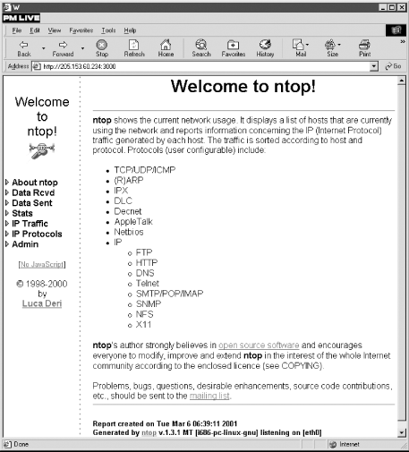
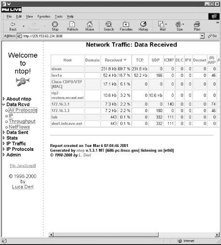
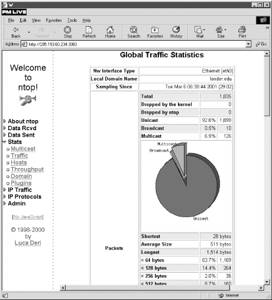
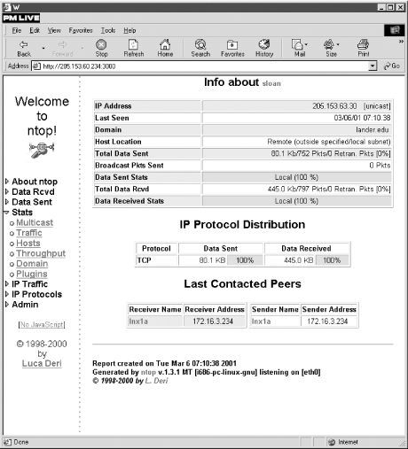
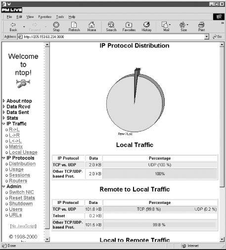

|  |
8.3. Point-Monitoring Tools
A point-monitoring tool puts your network interface in promiscuous mode and allows you to collect information on all traffic seen at the computer's interface. The major limitation to point monitoring is it gives you only a local view of your network. If your focus is on host performance, this is probably all that you will need. Or, if you are on a shared media network such as a hub, you will see all of the local traffic. But, if you are on a switched network, you will normally be able to see only traffic to or from the host or broadcast traffic. And as more and more networks shift to switches for efficiency, this problem will worsen. The quintessential point-monitoring tools are network sniffers. In Chapter 5, "Packet Capture", we saw several utilities that capture traffic and generate traffic summaries. These included tcp-reduce, tcptrace, and xplot. In general, sniffers are not really designed for traffic measurement -- they are too difficult to use for this purpose, provide too much information, and provide information in a format ill-suited to this purpose. But if you really want to understand a problem, packet capture gives you the most complete picture, if you can wade through all the data.8.3.1. ntop
ntop, the work of Luca Deri, is an excellent example of just how useful a point-monitoring tool can be. ntop is usually described as the network equivalent of the Unix utility top. Actually, it is a lot more. ntop is based on the libpcap library that originated at the Lawrence Berkeley National Laboratory and on which tcpdump is based. It puts the network interface in promiscuous mode so that all traffic at the interface is captured. It will then begin to collect data, periodically creating summary statistics. (It will also use lsof and other plug-ins to collect data if available.) ntop can be run in two modes: as a web-based utility using a built-in web server or in interactive mode, i.e., as a text-based application on a host. It closely resembles top when run in interactive mode. This was the default mode with earlier versions of ntop but is now provided by a separate command, intop. Normally, you will want to use a separate window when using interactive mode.8.3.1.1. Interactive mode
Here is an example of the output with intop :Interpretation of the data is straightforward. The top two lines show the program name and version, date, interface, number of packets, total traffic, and throughput. The first column lists hosts by name or IP number. The second column reflects activity since the last update -- Idle, Send, Receive, or Both. The next two columns are the amount of traffic sent and received, while the last two columns break traffic down as TCP, UPD, or ICMP traffic. intop should be started with the -i option to specify which interface to use. For example:$<50> intop 0.0.1 (Sep 19 2000) listening on [eth0] 379 Pkts/56.2 Kb [IP 50.5 Kb/Other 5.7 Kb] Thpt: 6.1 Kbps/24.9 Kbps Host Act -Rcv-Rcvd- Sent TC-TCP- UDP IC$ sloan B 69.0% 16.7% 38.8 Kb 0 0 lnx1a B 16.7% 69.4% 9.4 Kb 0 0 rip2-routers.mcast.net R 3.7% 0.0% 0 2.1 Kb 0 172.16.3.1 B 2.1% 6.5% 0 0 0 Cisco CDPD/VTP [MAC] I 4.7% 0.0% 0 0 0 172.16.3.3 B 2.2% 6.1% 0 0 0
If your computer is multihomed, you can specify several interfaces on the command line, each with a separate -i. Once started, it prints an annoying 20 lines or so of general information about the program and then gives you a prompt. At this point, you can enter ? to find out what services are available:lnx1# intop -i eth0
As you can see, a number of commands are planned but had not been implemented at the time this was written. Most are exactly what you would expect. You use the top command to get a display like the one just shown. The info command reports the interface and number of packets captured. With the filter command, you can set packet-capture filters. You use the same syntax as explained in Chapter 5, "Packet Capture" with tcpdump. (Filters can also be specified on the command line when intop is started.) The lsdev command lists interfaces. The swap command is used to jump between data collection on two different interfaces. You can change how the data is displayed on-the-fly using your keyboard. For example, the d key will allow you to toggle between showing all hosts or only active hosts. The l key toggles between showing or not showing only local hosts. The p key can be used to show or suppress showing data as percentages. The y key is used to change the sorting order among the columns. The n key is used to toggle between hostnames and IP addresses. The r key can be used to reset or zero statistics. The q key is used to stop the program.intop@eth0> ? Commands enclosed in '<>' are not yet implemented. Commands may be abbreviated. Commands are: ? <warranty> filter swap nbt help <copying> sniff top <dump> exit history uptime lsdev <last> quit open <hash> hosts <nslookup> prompt <close> info arp intop@eth0>
8.3.1.2. Web mode
Actually, you'll probably prefer web mode to interactive mode, as it provides considerably more information and a simpler interface. Since ntop uses a built-in web server, you won't need to have a separate web server running on your system. By default, ntop uses port 3000, so this shouldn't interfere with any existing web servers. If it does, or if you are paranoid about using default ports, you can use the -w option to select a different port. The only downside is that the built-in web server uses frames and displays data as tables, which still seems to confuse some browsers, particularly when printing. There are a number of options, some of which are discussed next, but the defaults work well enough to get you started. Once you start ntop, point your browser to the machine and port it runs on. Figure 8-1 shows what the initial screen looks like.
Figure 8-1. ntop's home page
As you can see, on startup ntop provides you with a brief description of the program in the larger frame to the right. The real area of interest is the menu on the left. By clicking on the triangles, each menu expands to give you a number of choices. This is shown to the left in Figure 8-2.
Figure 8-2. ntop's All Protocols page
Figure 8-2 shows the All Protocols page, which groups traffic by protocol and host. This is available for both received and transmitted data. A number of statistics for other protocols -- such as AppleTalk, OSPF, NetBIOS, and IGMP -- have scrolled off the right of this window. You can click on the column header to sort the data based on that column. By default, this screen will be updated every two minutes, but this can be changed. The IP option displays received or transmitted data grouped by individual IP protocols such as FTP, HTTP, DNS, and Telnet. The Throughput option gives a table organized by host and by throughput, average throughput, and peak throughput for both bits and packets. The Stats submenu offers a number of options. Multicast gives a table of multicast traffic. Traffic provides you with a number of tables and graphs showing how traffic breaks down. Figure 8-3 shows one of these graphs.
Figure 8-3. ntop's Traffic page under Stats
Figures and tables break down traffic by broadcast versus unicast versus multicast packets, by packet size categories, by IP versus non-IP traffic, by protocol category such as TCP versus UDP versus AppleTalk versus Other, and by application protocols such as FTP versus Telnet. Either bar graphs or pie charts are used to display the data. The tables give the data in both kilobytes and percentages. These graphs can save you a lot of work in analyzing data and discovering how your network is being used. The Host option under Stats gives basic host information including hostnames, IP addresses, MAC addresses for local hosts, transmit bandwidth, and vendors for MAC addresses when known. By clicking on a hostname, additional data will be displayed as shown in Figure 8-4.
Figure 8-4. Host information
The host shown here is on a different subnet from the host running ntop, so less information is available. For example, there is no way for ntop to discover the remote host's MAC address or to track traffic to or from the remote host that doesn't cross the local network. Since this displays connections between hosts, its use has obvious privacy implications. The Throughput option gives a graph of the average throughput over the last hour. Domain gives a table of traffic grouped by domain. Plug-ins provide a way to extend the functionality of ntop by adding other applications. Existing plug-ins provide support for such activities as tracking new ARP entries, NFS traffic, and WAP traffic and tracking and classifying ICMP traffic. An important issue in capacity planning is what percentage of traffic is purely local and what percentage has a remote network for its source or destination (see the sidebar "Local Versus Remote Traffic"). The IP Traffic menu gives you options to collect this type of information. The Distribution option on the IP Protocols menu gives you plots and tables for local and remote IP traffic. For example, Figure 8-5 shows a graph and tables for local and remote-to-local traffic. There is a local-to-remote table that is not shown. The Usage option shows IP subnet usage by port. Sessions shows active TCP sessions, and Routers identifies routers on the local subnet.
Figure 8-5. Measuring local and remote traffic
The last menu, Admin, is used to control the operation of ntop. Switch NIC allows you to capture on a different interface, and Reset Stats zeros all cumulative statistics. Shutdown shuts down ntop. Users and URLs allow you to control access to ntop. A number of command-line options allow you to control how ntop runs. These can be listed with the -h option. As noted previously, -w is used to change the port it listens to, and -i allows you to specify which interface to listen to. -r sets the delay between screen updates in seconds. The -n option is used to specify numeric IP addresses rather than hostnames. Consult the documentation for other options. ntop has other features not discussed here. It can be used as a lightweight intrusion detection system. It provides basic access control and can be used with secure HTTP. It also provides facilities to log data, including logging to a SQL database. As previously noted, the real problem with point monitoring is that it doesn't really work well with segmented or switched networks. Unless you are mirroring all traffic to your test host, many of these numbers can be meaningless. If this is the case, you'll want to collect information from a number of sources.
|  | |
| 8.2. Host-Monitoring Tools |  | 8.4. Network-Monitoring Tools |